A CSOC in your AWS account, then a Gen3 commons on it
You take an empty AWS account to a running CSOC (the control plane for Gen3 commons) with the bootstrap wizard on your laptop. Then you deploy a Gen3 commons from that CSOC, and finally you tear it all down. Every step has four parts: Do this, What you should see, What's happening (with an animated diagram to read while you wait) and If something goes wrong.
Before you start
- Docker is running (Docker Desktop, OrbStack or Colima).
- The repo is checked out:
git clone https://github.com/uc-cdis/gen3-admin && cd gen3-admin - The images are on your laptop before the session (see step 0): building them over venue Wi-Fi is slow.
- An AWS account you can admin, with a profile for it in
~/.aws/config(SSO works). - A fresh SSO sign-in:
aws sso login --profile default. The apply wants at least 45 minutes left on it. - A domain you can delegate a subdomain from, e.g.
workshop.your-domain. Its parent zone is either in Route 53 (reachable with one of your profiles) or somewhere you can add 4 NS records.
Screenshots in this guide come from the dry run, and some were taken before the UI changed. The wizard now has a sticky 7-step stepper (Welcome · Setup · Review · Provision · Certificate · Install · Done) with a banner under it. The banner always says where you stand and has the one button to press next. If a screenshot and the banner disagree, go by the banner.
Your values
Type your own values here and every command and field value on this page uses them. Copy buttons copy them too. They are saved in this browser only.
Derived: state bucket · portal · Keycloak · commons
How it fits together
Click a box to jump to the step that explains it. Play walks through the order things get built.
- On your laptop, Docker runs the wizard (frontend), the bootstrap API and a socket proxy. Your AWS credentials never leave the laptop.
- Setup creates the S3 state bucket (Terraform state and the record of every run) and a Route 53 zone delegated from your domain.
- Each Terraform or install run happens in a fresh runner container. The apply builds the VPC, NAT, Squid and the EKS cluster with Karpenter.
- After the apply, ACM issues a certificate for the portal and Keycloak hostnames. Its proof of ownership is DNS records in your zone.
- Bootstrap stores the CSOC's secrets in Secrets Manager and installs the controllers, Keycloak and the CSOC portal into the cluster.
- Finish waits for the load balancer and points and at it. Only your allowed addresses get through.
- In the portal you deploy an agent into the CSOC's own cluster. It connects back to the CSOC API over gRPC with mutual TLS.
- The portal asks the agent to Helm-install a Gen3 commons. external-dns gives it .
Before you start
Docker, the repo, images, an AWS profile and a domain. Do this before the session.
- Docker running. Docker Desktop, OrbStack or Colima. Check it:
docker info --format '{{.ServerVersion}}' - Clone the repo:
git clone https://github.com/uc-cdis/gen3-admin cd gen3-admin
- Get the images onto your laptop. Use the organizer's instructions if quay images were published for the workshop. With the compose file as it is in the repo today, the API and frontend are built from source and the Terraform runner image (
gen3-terraform:latest) is local only, so build them once ahead of time:./scripts/build-terraform-image.sh docker compose -f docker-compose-bootstrap-csoc.yml build
- A profile for the account you deploy into, in
~/.aws/config. An SSO profile works. If you reach the account by assuming a role, a profile like this does it:[profile ] role_arn = arn:aws:iam:::role/<admin-role> source_profile = region =
- Sign in and check the account:
The
aws sso login --profile aws sts get-caller-identity --profile
Accountit prints is the one the CSOC goes in. Write it into Your values. - Pick your zone: a subdomain of a domain you control, e.g. . The wizard creates it in your account and delegates it. If the parent zone is in Route 53, a profile that can reach it lets the wizard add the NS records for you. Otherwise you add 4 NS records at your DNS host.
docker infoprints a version, with no "Cannot connect to the Docker daemon".docker imageslistsgen3-terraform(and the compose project's api and frontend images, if you built them).aws sts get-caller-identityprints the account you meant, not the account that holds your parent DNS zone.
The wizard drives everything from your laptop with your own AWS credentials. Nothing is installed on your machine but Docker: Terraform, Helm, kubectl and the AWS CLI live in the runner image, and the API starts one runner container per run.
The domain matters because the CSOC is served over HTTPS at real public names (, ). ACM only issues the certificate once public DNS can find your zone.
| You see | It means | Do |
|---|---|---|
The SSO session associated with this profile has expired | Your SSO token ran out. | aws sso login --profile |
Cannot connect to the Docker daemon | Docker is not running. | Start Docker Desktop / OrbStack, or run colima start. |
get-caller-identity shows the wrong account | The profile points elsewhere (often the default profile is the DNS account). | Fix role_arn in the profile, or pick another profile. |
Start the wizard
Three containers on your laptop, reachable from your laptop only.
- In the
gen3-admindirectory:If you did not build the images beforehand, adddocker compose -f docker-compose-bootstrap-csoc.yml up -d
--build(and run./scripts/build-terraform-image.shfirst). - Open the wizard:
http://localhost:3000/bootstrap(on macOS:open http://localhost:3000/bootstrap). - Optional: check that all three are up:
docker compose -f docker-compose-bootstrap-csoc.yml ps
Developers: testing unpublished gen3-terraform modules
Set TERRAFORM_MODULES_DIR=~/path/to/gen3-terraform (it goes in the gitignored .env) before up, so plan, apply and destroy all use the same local modules.
pslists api, frontend and docker-proxy, all running.- The browser shows Welcome to the Gen3 CSOC Bootstrap and the stepper Welcome · Setup · Review · Provision · Certificate · Install · Done.
Three containers start. The frontend (port 3000) is the wizard. The API (port 8002) runs without a login, as an admin that uses your AWS credentials, so both are published on 127.0.0.1 only and nothing listens on your network. The docker socket proxy lets the API create, start, inspect, read logs of, wait for and stop containers, and nothing else.
For each run (init, plan, apply, bootstrap, finish, uninstall, destroy) the API starts a runner container from the Terraform image. Your ~/.aws is mounted into it read-only and copied to a writable home inside, so the AWS CLI can refresh an SSO token without touching your files. The runner's log streams back to the page as it runs.
- You open
localhost:3000/bootstrap. The frontend serves the wizard. - Each click calls the API at
/api/…, which is published on 127.0.0.1:8002 only. - The API reads your profiles from
~/.awsto check who you are (the blue identity box). - To run Terraform, the API asks the socket proxy to start a container. The proxy allows container operations only.
- A fresh runner container starts with your
~/.awscopied in andAWS_PROFILEset to the profile you chose. - The runner calls AWS: Terraform, the AWS CLI, kubectl and Helm all run inside it.
- Its log streams back through the API to your browser, so you watch the run live.
| You see | It means | Do |
|---|---|---|
| localhost:3000 does not load | The frontend is not up yet, or failed. | docker compose -f docker-compose-bootstrap-csoc.yml logs frontend api |
port is already allocated | Something else uses 3000 or 8002. | Stop it (often another npm run dev), then up -d again. |
| Later, a red box: The init did not start | The runner image is missing, or AWS refused the credentials. | Run ./scripts/build-terraform-image.sh, or sign in again. Nothing ran, so nothing changed. |
Welcome
What will be built, and how the pieces relate.
- Read the list: a VPC with NAT and a Squid egress proxy, an EKS cluster, a certificate and DNS records, the CSOC portal and Keycloak behind an allowlisted load balancer.
- Click Next (top right, next to Back).
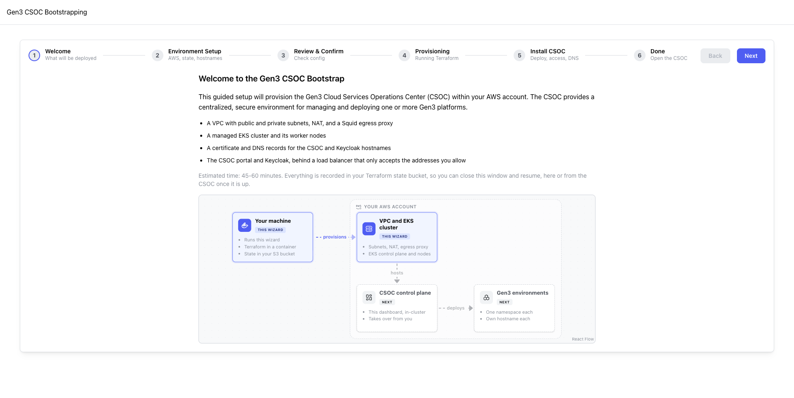
Welcome to the Gen3 CSOC Bootstrap, the list above, a diagram, and "Estimated time: 45-60 minutes".
Everything the wizard does is recorded in your state bucket: the Terraform state and a record of every environment and run. That is why you can close the tab and come back, here or later from the CSOC itself, which reads the same bucket.
See How it fits together for the whole picture.
Nothing can go wrong here. If the page is blank, see step 1.
Setup: account, state bucket, names, DNS zone
Environment Setup. Only the bucket and the DNS zone are created at this point.
A. The account
- AWS Credentials: choose Select AWS profile (including SSO profiles).
- AWS Profile:
. Leave Assume role (optional) empty. - Read the blue box: "Deploying into AWS account ". In the dry run, Auto-detect found the parent-DNS account instead. If the number is wrong, stop and pick the right profile.

B. The state bucket
- Terraform State Bucket:
(bucket names are global, so the account ID keeps yours unique). Wait for the blue box to update first. - Click Check. You get "Bucket does not exist". Click Create bucket.
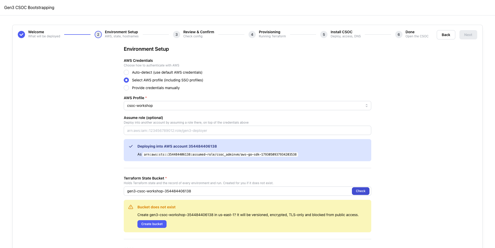
C. Name, region, hostname
- CSOC Name:
. It names the VPC, the cluster and the state key. - AWS Region:
. It needs at least 3 availability zones. - CSOC Hostname:
- DNS for the hostnames: keep A Route 53 hosted zone in this account. I manage DNS myself also works, but then you create the certificate's validation records and the final two CNAMEs yourself.
- Click Validate (inside the hostname field).
D. Create and delegate the zone
- A yellow box says No hosted zone yet. Hosted zone to create is filled in:
- Delegate it from the parent zone using: Profile: (the profile that reaches your domain's zone), The credentials above if the parent is in this account, or I'll add the NS records myself if your domain is not in Route 53.
- Click Set up zone and delegation. If you chose "myself", add the 4 NS records it shows at your DNS host.
- Wait for Delegation is live, then the green Domain Verified. Until then the button reads Check again, and the page also re-checks by itself every 20 seconds.
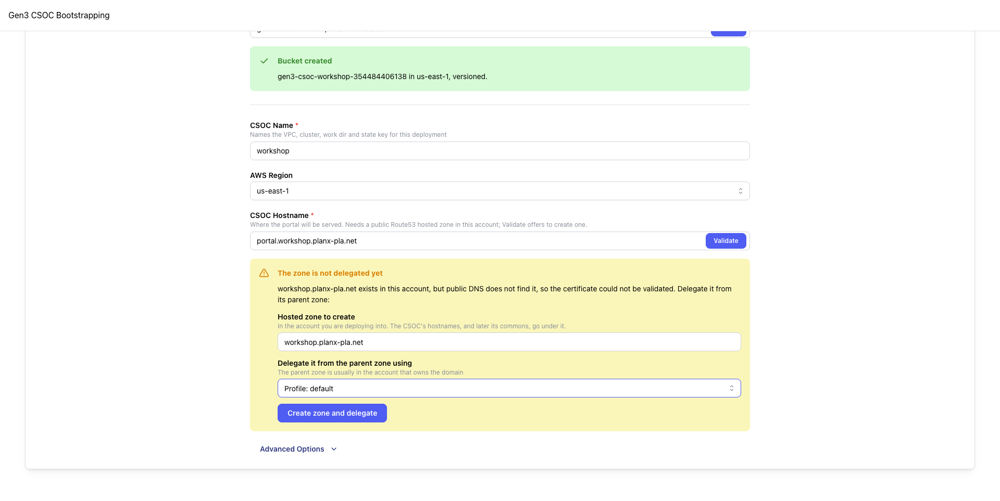
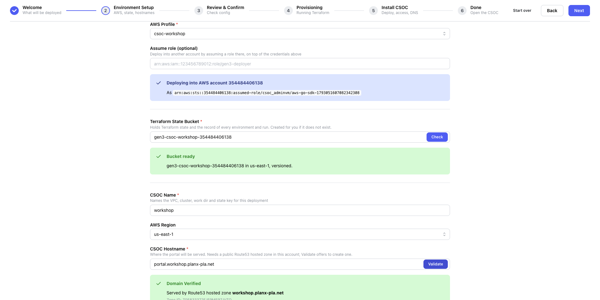
E. Advanced Options (leave as they are)
- Keycloak Hostname: by default.
- VPC CIDR Block:
172.24.16.0/20. Remember it: a commons VPC you peer with later must not overlap it. - Commons data bucket: off. A CSOC does not need one.
Click Next.
Delegation was immediate in the dry run. Allow a few minutes. Next stays disabled until the identity, bucket, name and hostname all check out.
Where your credentials go
The wizard never asks for keys. Your SSO session signs the default profile in. The profile assumes the admin role in the CSOC account on top of it. Every run gets that profile name as AWS_PROFILE, plus a writable copy of ~/.aws.
aws sso logincaches a short-lived SSO token in~/.aws/sso/cache.- The
default(SSO) profile turns that token into credentials for its own account. hassource_profile = defaultand arole_arn. The AWS SDK assumes that role in the CSOC account.- The API asks STS "who am I?" with that profile, and the blue box shows the account and the assumed role.
- Each runner container gets
AWS_PROFILE=and the same chain, so Terraform acts as that role.
Why a delegated zone
The portal, Keycloak and later every commons get names under . ACM proves you own them by looking up DNS records in that zone, so public DNS must be able to find it. Delegation is 4 NS records in the parent zone that say "ask these name servers about ". The wizard refuses if the parent already has records under that name, and it creates the zone with a 60-second negative-caching time, so a lookup made too early is not remembered for a day.
- The wizard creates the hosted zone in the CSOC account. Route 53 assigns it 4 name servers.
- With the parent profile, it adds one NS record set to the parent zone that points at those name servers.
- A public resolver asked about the zone goes to the parent, follows the NS records, and gets an answer from the new zone.
- The wizard sees that answer and shows Domain Verified.
| You see | It means | Do |
|---|---|---|
Yellow AWS SSO session expired with an aws sso login command | The token ran out. Every button is disabled until you sign in. | Run the command shown, e.g. aws sso login --profile , then press Check again. |
| Blue box shows the wrong account | Auto-detect used your default credentials. | Choose Select AWS profile and pick . |
| "Bucket not available" | The name is taken by someone else (names are global), or you cannot reach it. | Change the name, e.g. add a suffix. |
| Bucket check result wiped right after picking a profile | The identity check landed after the bucket check. | Wait for the blue box, then click Check again. |
| Red Not delegated: the parent already uses this name | The parent zone has records under that name. Nothing was changed. | Choose another zone name (e.g. ws2.your-domain). |
| The zone is not delegated yet / banner "… is not delegated yet" | The zone exists, but public DNS does not find it yet. | If you added the NS records, wait: the page re-checks every 20 s and carries on by itself. If not, delegate it from the box shown. |
| Domain Validation Failed | No public zone in this account serves the name or a parent of it. | Check the hostname spelling and that you are in the right account. |
Review & Provision
Last look before Terraform starts. Provision registers the environment and plans it.
- Check Review & Confirm: AWS Account , Portal https://, Keycloak https://, DNS Route 53 zone , State s3:///gen3-csoc/environments//, Data bucket none.
- Certificate reads "chosen after the infrastructure is up". That is expected: you choose it on the Certificate step.
- Click Provision (top right, where Next was).
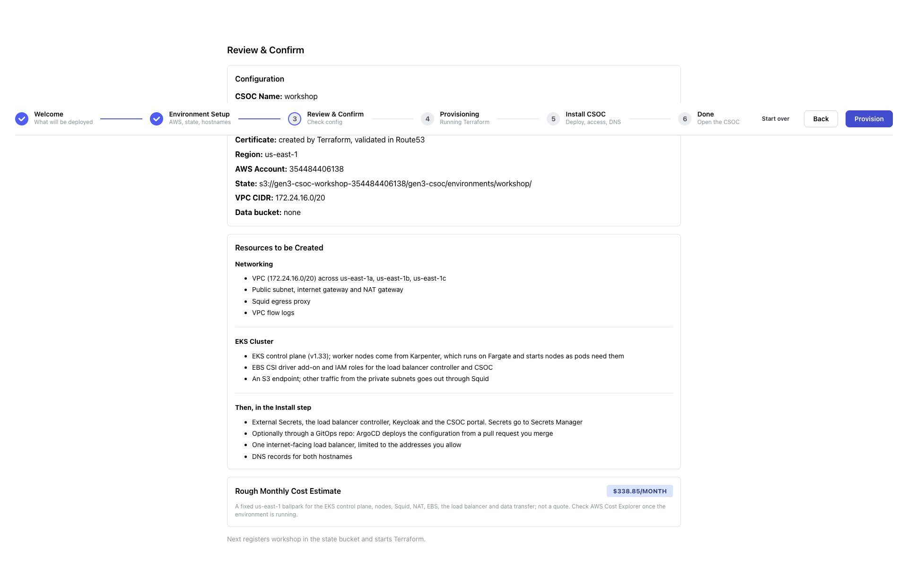
"Rough Monthly Cost Estimate" of about $340/month (us-east-1 ballpark). After Provision the page moves to Provision and the banner says:
Then, without you pressing anything, Plan in progress. See step 5.
So far AWS has only the bucket and the zone. Provision writes an environment record for into the state bucket's registry, the record every later screen is derived from. It then starts terraform init, and once that succeeds, terraform plan. Plan always initialises first: init is quick, and a changed module or a fresh work directory needs it.
The wizard has one state machine: the banner is computed from the record's settled status (new, planned, applied, bootstrapped, installed, partial, destroyed) and its last run (running, succeeded, failed, stopped, lost). A failed run never forgets what was settled before it, so every failure can be retried from where it stopped.
| You see | It means | Do |
|---|---|---|
| Yellow Configuration Incomplete with a list | Something on Setup was not checked (identity, bucket, name, hostname, or fewer than 3 AZs). | Click Back and fix the item listed. |
| Red Could not register the environment | Writing to the bucket failed, usually expired credentials. | Sign in again, then Provision again. |
| Banner Nothing created yet | Saved, but no plan ran. | Press Plan in the banner. |
Plan: read what will be built
Init and plan run by themselves. The plan changes nothing in AWS.
- Wait for "Working out the plan…" to turn into the Plan review. The badges show about +100 to create and nothing else.
- Open the groups in the List view: networking, firewall rules, the cluster, IAM, DNS, storage, logging.
- Switch to Diagram. Try:
- Find a resource: type
nat,eks clusorcsoc api. The diagram zooms to it. - Click a resource to draw its connections (NAT, Route, IAM Role, DNS, Secured By) and open its details. Esc clears.
- Click a service block, or Open all blocks. "Security, Identity & Compliance" holds one IAM role per controller.
- Find a resource: type
- When you have looked, press Apply in the banner and go on to step 6.
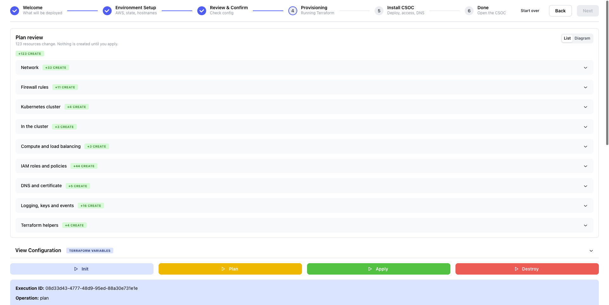

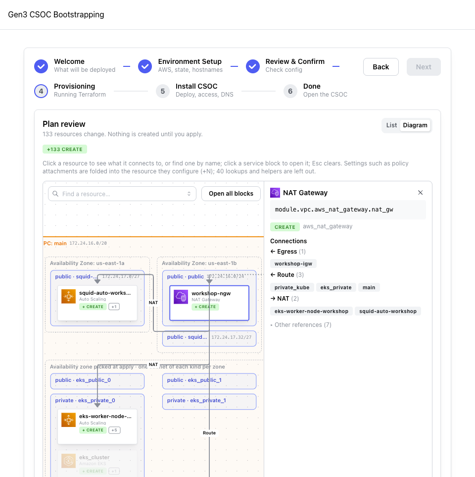
The chips:
+N to create (green) | new resources. On a blank account this is the only chip. |
~N to update (yellow) | changed in place. |
±N to replace (orange) | destroyed and created again. Worth reading on a running CSOC. |
−N to destroy (red) | removed. An apply with any of these on existing infrastructure asks you to type the environment name. |
+N on a diagram card | settings folded into the resource they configure (policy attachments, rules). |
| "availability zone picked at apply" | the EKS subnets: the module shuffles zones at apply time, so the plan knows one per zone, not which is where. |
The dry run planned about 101 to add. Older notes say 133, from when the certificate and a data bucket were in Terraform.
terraform init downloads the AWS, Helm and kubectl providers and the gen3-terraform vpc and eks modules, and connects to the S3 backend (state locked with an S3 lock file, no DynamoDB). terraform plan compares the configuration with the empty state and lists everything it would create.
Only a summary reaches your browser: addresses, types, actions and names. The full plan holds your variable values and never leaves the runner. Apply uses exactly the plan you reviewed.
- init: the runner downloads providers and the vpc / eks modules from GitHub.
- It connects to the S3 backend:
s3:///…/, with an S3 lock file. - plan: Terraform works out about 100 resources to create. Nothing in AWS changes.
- The full plan file stays in the runner's work directory. Only a summary is extracted.
- The browser draws the summary as the List and the Diagram.
Closed the tab? Nothing is lost.
Open /bootstrap again, pick the same profile and bucket, and click Check. The bucket lists its environments. Click Resume on yours.
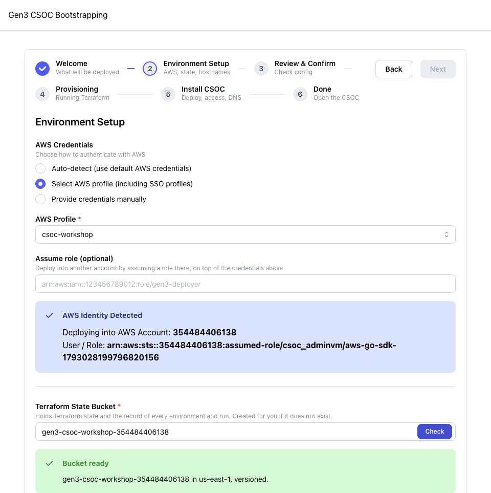
| Banner | It means | Press |
|---|---|---|
| The plan failed / The init failed | Nothing in AWS changed. The log below (with its Error: lines pulled out) says why. | Retry plan, or Edit configuration. |
| … was stopped | Someone pressed Stop this run. | Retry that step. |
| …'s result is unknown | The API restarted while it ran, so its end was not recorded. | Retry that step. |
| Red The plan did not start (SSO) | Expired session. Nothing ran. | aws sso login --profile , then retry. |
Apply: Terraform builds the infrastructure
The long one. Watch it in the list and on the diagram, and read along here.
- Make sure your SSO session has at least 45 minutes left. If it has less, the wizard asks you to sign in again and shows the command.
- Press Apply in the banner. Start the timer below.
- Watch the plan review turn into progress: every resource shows waiting, in progress (with how long), done or failed, and a bar shows the whole.
- Read What's happening while you wait. You can close the tab and come back: the wizard follows a run that is still going and never starts a second one.

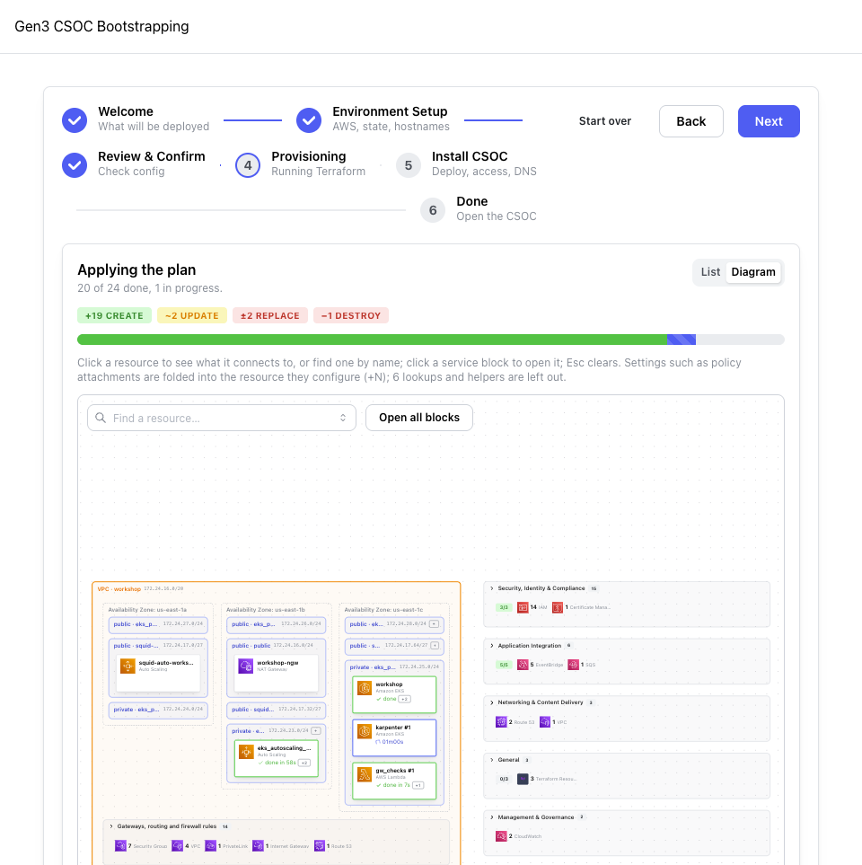
Roughly: VPC, NAT gateway and Squid in the first few minutes. Then the EKS control plane, about 10 minutes of apparently nothing. Then Karpenter, nodes and the EBS CSI add-on. When it ends:
The page moves to Certificate. If you are on an earlier step, the banner offers Continue to Certificate.
Terraform builds a small, locked-down network and a Kubernetes cluster with no fixed worker nodes. Step through the layers:
- VPC across 3 availability zones (172.24.16.0/20): public and private subnets, route tables, flow logs. Plus int_services, a small subnet routed through the NAT gateway for the Squid lambda.
- Internet + NAT gateway in the public subnet. A private Route 53 zone and a KMS key are created alongside.
- Squid, an autoscaling egress proxy. The cluster's private subnets have no internet route of their own. Everything they fetch goes through Squid's allowlist.
- gw_checks lambda (in int_services, out via NAT): finds a healthy Squid, points the private subnets' default route at it, and names it
cloud-proxy.internal.io. - EKS control plane (v1.33), private and public API endpoint. This is the ≈10-minute wait.
- IAM: the cluster's OIDC provider, and IRSA roles for the load balancer controller, External Secrets, the EBS CSI driver, the CSOC API and external-dns. Each pod gets AWS rights only through its own role.
- Karpenter runs on Fargate, so it needs no nodes itself. Its image is pulled through Squid.
- Karpenter sees pods with nowhere to run and starts EC2 nodes (Amazon Linux 2023, on-demand c/m/t types for a CSOC).
- The EBS CSI driver add-on comes up on those nodes, so volumes (Keycloak's Postgres, the CSOC API) can be created. Terraform waits for it last.
The certificate is not Terraform's (create_certificate = false). The wizard handles it next, the way the ACM console does. The Terraform lives in gen3-terraform's examples/csoc (main.tf for vpc + eks, bootstrap.tf for IRSA, EBS CSI and EKS access).
| Banner | It means | Press |
|---|---|---|
| The apply failed / Part of the infrastructure exists | Status partial. The list says which resource failed and why. Terraform keeps what it created. | Fix the cause, then Plan again (it shows only what is left), then Apply. Or Tear down. |
| Before it starts: "sign in again" prompt | Short SSO guard: under 45 minutes left on the session. | Run the aws sso login shown, then Apply. |
| Typed confirmation asked | The plan destroys or replaces existing infrastructure. | Read the plan. Type the name only if you mean it. |
| The tab reloaded mid-apply | Nothing is lost. | Open /bootstrap: it returns to the step and follows the run. |
| Timer red, nothing moving for 15+ min after EKS | Often Karpenter or nodes not getting egress through Squid. | Open the run log, then ask a helper. Do not press Stop unless asked. |
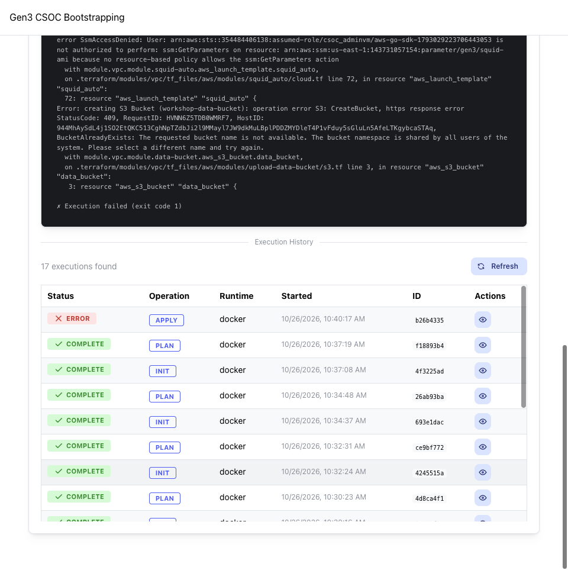
Certificate & DNS
An ACM certificate for the portal and Keycloak names, validated through your zone.
- Keep Request a public certificate selected (the others are Import a certificate and Use an existing certificate).
- Fully qualified domain names is filled in with and . Leave Validation method on DNS validation (recommended) and Key algorithm on RSA 2048.
- Click Request.
- In Route 53 mode there is nothing more to press: the wizard writes the validation records into your zone, checks them every 10 seconds, and moves on to Install once ACM issues the certificate.
If you chose I manage DNS myself: copy the CNAME name and value pairs from the table into your DNS. The banner shows Check now, and the page also checks every 10 seconds by itself.
The table shows each name with in , Seen in public DNS: yes, and finally validated. Then "Issued. The install serves it on the CSOC's load balancer." and the banner becomes:
ACM issues a certificate only after it sees proof that you control each name: one CNAME record per name, with a value ACM chose. Because your zone is in this account and delegated, the wizard writes the records itself. ACM then looks them up through public DNS, exactly like any resolver would. The records stay, so ACM can renew the certificate automatically.
- The wizard requests a certificate for the two hostnames. ACM marks it
PENDING_VALIDATION. - ACM publishes one validation CNAME per name (
_abc123.portal…→_xyz.acm-validations.aws). - The wizard writes those records into your Route 53 zone.
- Public DNS answers for them, through the delegation you set up on Setup.
- ACM finds every record and marks the certificate
ISSUED. The wizard moves on to Install.
| Banner | It means | Press |
|---|---|---|
| Red Could not write the validation records | Writing to Route 53 failed, usually credentials. | Try again (sign in first if the session expired). |
| Create the validation records in your DNS | DNS-yourself mode. ACM waits for you. | Add the CNAMEs, then Check now. |
| The certificate is failed / expired | ACM will not issue it. | Use a different certificate, or Tear down. |
| The certificate does not cover host | The hostnames were edited after it was chosen. | Use a different certificate. |
| Stuck on "waiting for public DNS" for more than 10 min | The zone is not delegated, or your resolver cached a "no such name". | Check the banner for a zone warning. See step 3. |
Install: Bootstrap CSOC
Who may reach it, the admin password, then the controllers, Keycloak and the portal go in.
- 1. How to deploy: Directly, from this wizard. Helm installs the same configuration ArgoCD would, with no repo. (With a GitOps repo needs a GitHub App and a repo. It is optional and not used today.)
- Allowed addresses: your current IP is filled in as
x.x.x.x/32. Add your team's or VPN's ranges if you need them. Only these can reach the portal, Keycloak and the agent endpoint. The cluster's own egress IP is added automatically. - Admin email (optional):
. Give it: without it Keycloak asks for email, first and last name at the first login, and you need it for the commons' user.yaml in step 12. - Click Generate password. It fills Admin password and Confirm admin password.
- Save the password now, in your password manager. It is for the CSOC user
admin, goes to the cluster once, and is not stored by the wizard. (Lost it? Reset admin password… on Done sets a new one.) - Leave the images empty (the default is
quay.io/cdis/csoc-api:masterandcsoc-frontend:master) unless the organizer gives you a tag. - Press Bootstrap CSOC in the banner. Start the timer.
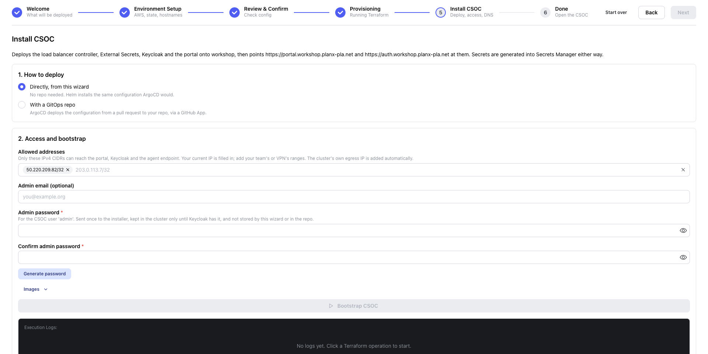
In the log, one === … === heading per stage (Connecting to cluster, Secrets Manager, Egress IP, First admin password, External Secrets Operator, AWS Load Balancer Controller, external-dns, CloudNativePG, Keycloak operator, CSOC manifests, CSOC portal), and finally === CSOC is applied ===. Then:
The bootstrap runs install-csoc.sh in a runner container, with direct.sh for the no-GitOps path. Each Helm release gets the name and namespace its ArgoCD Application would have, so the CSOC can move to GitOps later without a reinstall.
- Connect:
aws eks update-kubeconfig, then wait for a Ready node (Karpenter may still be starting one). - Secrets Manager under
gen3-csoc//: Keycloak's admin login, the portal's client secret, NextAuth secrets. Generated only if absent, so a re-run keeps them. - Egress IP: a busybox pod fetches checkip.amazonaws.com. The answer is Squid's public IP, which gets added to the allowlist, because the portal calls Keycloak at its public hostname.
- First admin password, as the
csoc-admin-bootstrapSecret the realm import reads. Finish deletes it. - External Secrets Operator: copies the Secrets Manager values into Kubernetes Secrets, through its IRSA role.
- AWS Load Balancer Controller (kube-system): turns Ingresses into ALBs.
- external-dns: will write each commons' DNS name into your zone, and only records it owns (never the portal or Keycloak names).
- CloudNativePG: the Postgres operator behind Keycloak's database.
- Keycloak operator, in the
csocnamespace. - CSOC manifests: storage class, ClusterSecretStore, ExternalSecrets (waited for), then Keycloak and the
csoc-realmimport. - CSOC portal (Helm release
csoc): frontend, API, and its gRPC endpoint for agents. Its Ingress makes the load balancer controller build an internet-facing ALB, limited to your allowlist.
Direct vs GitOps. GitOps installs ESO and ArgoCD plus a root Application instead, opens a pull request with the CSOC's configuration, and the banner waits for you to merge it ("Waiting for pull request #N to be merged", checked every 15 seconds). After that, every change to the CSOC is a pull request.
| Banner | It means | Press |
|---|---|---|
| The bootstrap failed | Still applied. The cluster is up. The log says what went wrong. | Bootstrap again (safe to repeat; it needs the form, so re-enter the password). |
| Button disabled: "Needs at least one allowed address and a confirmed admin password" | The form is incomplete. | Fill in the allowlist and both password fields. |
| "sign in again" before it starts | Under 15 minutes left on your SSO session. | Run the command shown. |
Log: WARNING: could not detect the cluster's egress IP | The probe pod could not start in time on a new node. | Login will fail until it is on the allowlist. Bootstrap again. |
Log: another operation is in progress | A stopped run left a Helm release stuck. | Bootstrap again: the install now rolls back or removes a stuck release first. |
| Waiting for pull request #N to be merged | GitOps mode only. | Open the pull request, merge it. |
Finish install
Allowlist with the egress IP, Keycloak ready, realm imported, DNS pointed at the load balancer.
- Press Finish install in the banner. Start the timer.
- Wait for
=== CSOC is installed ===in the log.
=== CSOC is installed === Portal: https:// (user: admin) Keycloak: https://
- Allowlist: Keycloak's and the portal's Ingresses are applied again, now with your addresses plus the egress IP the bootstrap found.
- It waits for Keycloak to be Ready, and for the portal's Helm release to finish rolling out.
- Realm: once the
csoc-realmimport is Done, the first admin password Secret is deleted from the cluster. From now on, Keycloak alone holds it. - Load balancer: it waits for the ALB the controller built and reads its hostname.
- DNS: it UPSERTs two CNAMEs (TTL 60) in your zone: and → the ALB.
- Public DNS answers, and the Done step shows the portal link.
| Banner | It means | Press |
|---|---|---|
| The finish failed | Still bootstrapped. Finishing again is safe. | Finish again. If the log points at the install, use Bootstrap again (in Advanced). |
Log: the ALB was not provisioned | The load balancer controller could not build it (often the certificate or subnets). | Ask a helper. The log names the controller's logs to check. |
| CSOC installed; waiting for DNS for a long time | Your resolver cached "no such name" from an earlier lookup (venue or campus Wi-Fi). | Wait a minute, or set your laptop's DNS to 1.1.1.1. |
Sign in to the CSOC
Keycloak login as admin. From here on you manage Gen3 from the CSOC.
- On Done, press Open the CSOC, or open
https:// - The portal sends you to Keycloak (CSOC-REALM). Username
admin, the password you saved. Click Sign In. - Back in the wizard, the Admin account panel shows the username and email. Reset admin password… generates a new password. Copy it, then press Set this password.
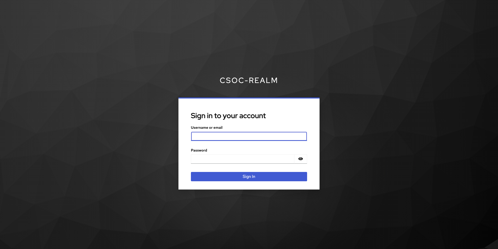
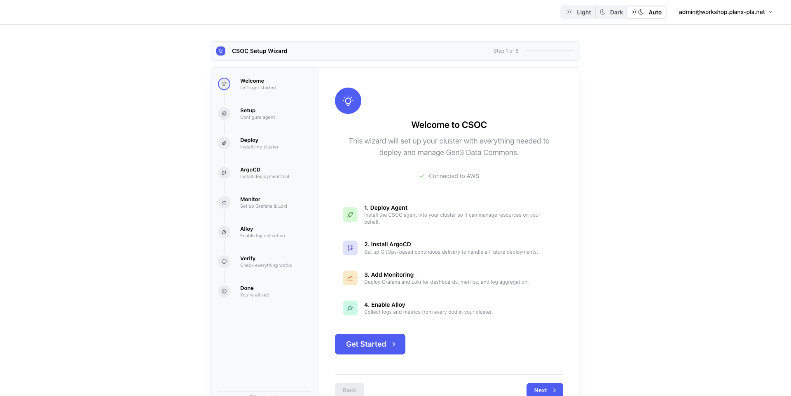
The CSOC portal, signed in as admin. A sign-in survives 8 hours idle and lasts up to 12 hours (CSOC realms no longer use Keycloak's 30-minute default).
- Your browser resolves to the ALB. The ALB lets your IP in because it is on the allowlist.
- The portal has no session for you, so it redirects you to Keycloak at .
- You sign in to the
csoc-realm. Keycloak's data lives in Postgres run by CloudNativePG. - Keycloak redirects back with a code. The portal exchanges it for tokens by calling Keycloak's public hostname from inside the cluster, which is why the egress IP must be on the allowlist.
- The portal's API uses its IRSA role for AWS ("Connected to AWS") and reads the same state bucket, so it already knows this environment's history.
| You see | It means | Do |
|---|---|---|
NXDOMAIN / "site can't be reached" | DNS is new, or your resolver cached the miss. | Wait a minute, or set DNS to 1.1.1.1. |
| 403 / connection refused at the ALB | Your IP is not on the allowlist (new network, VPN). | Run Bootstrap again with your current IP added, then Finish again. |
| Keycloak asks for email, first and last name | No admin email was given. | Fill them in once. |
| Login loops or errors after Keycloak | The egress IP changed (Squid failover), so in-cluster calls to Keycloak are refused. | Ask a helper. Bootstrap + Finish again re-detects it. |
| Forgot the password | Reset admin password… on the wizard's Done step. | |
| Signed out mid-session (older install) | The realm had a 30-minute idle timeout. | Load the Done step once: it extends the session settings. |
Connect the CSOC's own cluster (Deploy Agent)
The CSOC deploys commons through an agent in each cluster. First, its own.
- The portal opens its onboarding wizard, Welcome to CSOC (Welcome · Setup · Deploy · ArgoCD · Monitor · Alloy · Verify · Done). Click Get Started.
- Configure Your Agent: Agent Name is auto-filled (e.g.
local-agent). Keep it, and note it: it is the Cluster you pick in step 12. - Click Deploy Agent. Wait for "Resources applied to cluster" and the agent to connect (30–60 s while the image pulls).
- The commons only needs the agent. The ArgoCD, Monitor and Alloy steps are optional: follow the presenter (for monitoring, Skip Monitoring Stack or Lightweight, "Best for workshops").
- At the end, You're Ready to Deploy Gen3 → Deploy a new Gen3 instance. You can also go straight to
https:///helm/gen3/deploy
"Installing Agent" → "Resources applied to cluster" → the agent shows as connected, under the name you gave it. The portal lists it as a cluster.
The CSOC never talks to a cluster's Kubernetes API directly. Each cluster runs an agent that dials out to the CSOC's gRPC endpoint and keeps the connection open. The CSOC sends it commands (Helm installs, status) over that connection. Here the agent is local, so it uses the in-cluster address csoc-grpc.csoc.svc:50051. An agent in another account would use the internal NLB, over VPC peering.
- You press Deploy Agent. The portal calls the CSOC API:
POST /api/agents/local. - The API issues the agent a client certificate from the CSOC's own CA and renders its manifest.
- It applies the manifest to its own cluster: a Deployment, its ServiceAccount and the certificate Secret.
- The agent pod starts and dials
csoc-grpc.csoc.svc:50051. Both sides present certificates (mutual TLS). - The agent registers. The portal now lists the cluster and can send it work.
| You see | It means | Do |
|---|---|---|
| "Waiting for agent pod to start…" for minutes | A node is being started, or the image is still pulling through Squid. | Press the retry button that appears. Allow 2–3 minutes on a fresh cluster. |
| Connection Failed on Welcome | The portal cannot reach its API. | Reload. If it persists, ask a helper. |
| The portal looks different from these words | The in-cluster portal runs csoc-*:master images, which can lag this guide. | Follow the screen's labels: the steps are the same. |
Deploy a Gen3 commons
The portal's Gen3 Deployment Wizard: Destination, Globals, Hostname, Database, Services, Auth, Config, Deploy.
Open Deploy a new Gen3 instance (/helm/gen3/deploy). Use Next at the bottom of each step.
| Step | Field | Value |
|---|---|---|
| Destination Cluster & namespace | Cluster | your agent from step 11 (e.g. local-agent) |
| Release Name | commons-a | |
| Namespace | leave it: it defaults to the release name. Leave the Helm repo (https://helm.gen3.org, chart gen3) as it is. | |
| Globals Core settings | Target cloud platform | Amazon Web Services (AWS), Region |
| Everything else | defaults (the presenter will say if anything differs) | |
| Hostname TLS & domain | Hostname | commons-a) |
| Certificate Source | AWS ACM | |
| Certificate | Click Request a certificate for . The CSOC writes its validation records into your zone. Wait for the badge to go from "waiting for ACM to validate" to issued: "It is selected for this commons." | |
| Database | Local or external | Local (a Postgres pod in the namespace). Keep Automatically Create Databases on. |
| Services | Modules | defaults: core services and the frontend |
| Auth OIDC / login | Log in through this CSOC | Click Use CSOC login. It turns into Connected: "Fence uses fence-commons-a; the Generic OIDC settings below are filled in." |
| Authorization Source | Custom user.yaml (inline) | |
| Custom Role Definitions (YAML format) | paste the user.yaml below | |
| Config | Per-service detail | defaults |
| Deploy | Review & launch | Check the summary, click Deploy Gen3. Start the timer. |
A minimal user.yaml that makes you admin
Users are known by email, as Keycloak passes it to Fence. Use the CSOC admin email from step 8: .
authz:
anonymous_policies: []
all_users_policies: []
groups:
- name: administrators
policies:
- all_programs_admin
- services.sheepdog-admin
- indexd_admin
- data_upload
users:
-
resources:
- name: data_file
- name: programs
- name: services
subresources:
- name: sheepdog
subresources:
- name: submission
subresources:
- name: program
- name: project
- name: indexd
subresources:
- name: admin
policies:
- id: all_programs_admin
resource_paths: [/programs]
role_ids: [admin]
- id: services.sheepdog-admin
resource_paths:
- /services/sheepdog/submission/program
- /services/sheepdog/submission/project
role_ids: [sheepdog_admin]
- id: indexd_admin
resource_paths: [/services/indexd/admin]
role_ids: [indexd_admin]
- id: data_upload
resource_paths: [/data_file]
role_ids: [file_uploader]
roles:
- id: admin
permissions:
- id: admin
action: {service: "*", method: "*"}
- id: sheepdog_admin
permissions:
- id: sheepdog_admin_action
action: {service: sheepdog, method: "*"}
- id: indexd_admin
permissions:
- id: indexd_admin
action: {service: indexd, method: "*"}
- id: file_uploader
permissions:
- id: file_upload
action: {service: fence, method: file_upload}
users:
:
admin: trueWhen it says Gen3 Deployed Successfully!, open the link under "Access your instance at:" (https://), click Login, and sign in through the CSOC's Keycloak as admin.
Deploying Gen3: "Sending configuration to cluster — installing commons-a into namespace commons-a…", then a grid of Deployments filling up with ready/total counts. After about 10 minutes, Gen3 Deployed Successfully! with the status, chart and revision, and buttons Go to Dashboard and Deploy Another.
If the deploy takes longer, you see Deployment Timeout ("Deployment is still in progress. Check your cluster for status."). That is not a failure: watch the Deployments in the dashboard.
- Request a certificate: the CSOC API asks ACM for and writes the validation records into your zone (its IRSA role allows that).
- Use CSOC login: the CSOC creates a Keycloak client
fence-commons-ain the CSOC realm, and the form fills Fence's generic OIDC settings with it. - Deploy Gen3: the portal sends only the values you changed to the API:
POST /api/agent/<cluster>/helm/install. - The API forwards the install to the agent over the open gRPC connection (mutual TLS).
- The agent runs
helm install commons-a gen3from helm.gen3.org into namespacecommons-a. - Gen3's pods start: Postgres, Fence, Arborist, Indexd, Sheepdog, Peregrine, the portal and revproxy. Karpenter adds nodes if they do not fit.
- Its Ingress makes the load balancer controller create an ALB with the ACM certificate.
- external-dns sees the Ingress and writes → that ALB into your zone, with a TXT record that marks it as its own.
- You open the commons, log in, and Fence sends you to the CSOC's Keycloak. user.yaml makes your email admin.
| You see | It means | Do |
|---|---|---|
| Load Warning: hostname is localhost | The Hostname step was skipped. | Go back to Hostname and set . |
| Certificate badge stays "waiting for ACM to validate" | Validation records not in public DNS yet. | Give it a few minutes. You can go on and come back to select it. |
| Deployment Failed | The agent or Helm returned an error (shown). | Read the message. Often a values typo in the YAML, or the agent is not connected. |
| Commons URL does not resolve | external-dns has not written it yet (needs the ALB first), or your DNS cache. | Wait 1–2 minutes, or set DNS to 1.1.1.1. |
| Logged in but no access | user.yaml email does not match the Keycloak email. | Edit the deployment and fix the email in user.yaml. |
Tear down
Back to a blank account. Uninstall, destroy, then optionally the zone and the bucket.
- Back in the wizard (
localhost:3000/bootstrap), on Done, press Tear down in the banner. (Or open Advanced under the run log → Tear down….) - Leave Force: don't wait for anything graceful ticked. It is right for a workshop environment.
- Tick Also delete the hosted zone and its delegation. Set Parent zone reached with to Profile: (as on Setup), or Nothing: I remove the NS records myself.
- Optional, last: Also empty and delete the state bucket. It goes only if every environment in it is destroyed. Leave it unticked if you may come back.
- Type
in Type … to confirm, press Tear down, and start the timer.
The commons is removed with the cluster: the uninstall deletes every namespace but the cluster's own. You do not need to remove commons-a first. Its ACM certificate (requested from the portal) is not deleted by the teardown. It costs nothing, but you can delete it in the ACM console.
The teardown panel lists the steps, each with its state, and each starts only once the one before it has succeeded:
- Uninstall the CSOC: load balancers, volumes, Karpenter nodes, DNS records and secrets the install added outside Terraform. A few minutes.
- Destroy the infrastructure:
terraform destroy, with "N destroyed, M in progress". 20 to 30 minutes. - Delete the hosted zone , with the wizard's certificate and the NS records in the parent.
- Delete the state bucket , if ticked.
Why this order? The install created things in AWS that Terraform does not know about: ALBs, EBS volumes, Karpenter's EC2 instances, DNS records, secrets. Left in place, they make terraform destroy fail (it cannot delete subnets an ALB still uses) or get left behind. So the uninstall runs first, while the controllers that clean up after them still run. The zone and bucket are not Terraform's, and the bucket holds the state the destroy uses, so it goes last.
- Squid route lambda removed first, so it stops rewriting
cloud-proxy.internal.io, and AWS starts releasing its network interface (≈20 min) in parallel with everything else. - ArgoCD (if any), then Ingresses and LoadBalancer Services: the load balancer controller deletes their ALBs, NLBs and security groups.
- CSOC portal, Keycloak and its database, then every namespace but the cluster's own, commons-a included. external-dns removes the commons' records as their Ingresses go.
- Volumes (every PVC; with Force, the EBS volumes by ID) and Karpenter nodes (limit to zero, NodeClaims deleted; with Force, instances terminated).
- DNS: the portal and Keycloak CNAMEs, and Squid's private record. Secrets Manager:
gen3-csoc//*, deleted without a recovery window. - terraform destroy (init first): the cluster, Fargate and Karpenter, IAM roles, Squid, NAT, the VPC. Most of the wait is the lambda's network interface.
- Optionally the hosted zone (with the wizard's certificate and the parent's NS records), then the state bucket.
| Banner | It means | Press |
|---|---|---|
| The uninstall failed | Removing what the install added did not finish. The CSOC is still recorded. | Retry teardown with Force. Or Destroy anyway… (it warns what may be left behind, and asks for the name). |
| The destroy failed | Status partial. Some resources are still there. | Retry teardown: it picks up where it stopped. |
| "sign in again" before it starts | Under 45 minutes left on your SSO session. A teardown is long. | aws sso login --profile |
| Destroy "in progress" on a subnet / security group for 20 min | AWS is releasing the Squid lambda's network interface. | Wait. This is normal. |
| Destroy: "Module not installed" | The stack was restarted without TERRAFORM_MODULES_DIR (developers). | Put it back in .env, restart, Retry teardown. |
| Bucket not deleted | Another environment in it is not destroyed, or it holds other objects. | Expected. Destroy the others first, or keep the bucket. |
Never edit the runner scripts while a teardown runs. If one is truly stuck, ask a helper before pressing Stop.
Where things live, and a glossary
For after the workshop.
In the gen3-admin repo
| Path | What |
|---|---|
docker-compose-bootstrap-csoc.yml | The laptop stack: api, frontend, docker-proxy. |
frontend/pages/bootstrap.jsx | The bootstrap wizard's page. |
frontend/lib/wizardState.ts | The state machine behind the banner (every title and button on this page). |
frontend/components/bootstrap/ | Banner, run panel, certificate step, teardown panel, admin account. |
frontend/components/PlanReview.jsx | The plan review list and its progress. |
api/internal/terraform/docker_runner.go | How runner containers start: mounts, ~/.aws copy, AWS_PROFILE. |
scripts/runner/install-csoc.sh, direct.sh | The bootstrap (direct mode installs with Helm). |
scripts/runner/finish-csoc.sh | The finish: allowlist, realm, ALB, DNS. |
scripts/runner/uninstall-csoc.sh | The uninstall before a destroy. |
helm/csoc/ | The CSOC portal's Helm chart. |
frontend/components/StepperForm/ | The portal's Gen3 Deployment Wizard. |
frontend/components/Welcome/OnboardingStepper.jsx | The portal's onboarding (Deploy Agent, ArgoCD, monitoring). |
docs/workshop/README.md, VALUES.md, PREP.md | The written walkthrough, what to type, and the full state table. |
In gen3-terraform
examples/csoc/: main.tf (vpc and eks modules, the int_services subnet for the Squid lambda), bootstrap.tf (IRSA roles, EBS CSI add-on, EKS access, external-dns policy), variables.tf, outputs.tf. Modules: tf_files/aws/modules/vpc and tf_files/aws/modules/eks.
In your AWS account
- State and registry:
s3:///gen3-csoc/environments// - Secrets: Secrets Manager,
gen3-csoc//… - DNS: Route 53 zone . Certificates: ACM in .
- Run work directories on your laptop:
~/.gen3-csoc/terraform
Glossary
- CSOC
- The Gen3 control plane: a portal, its API and Keycloak, in its own EKS cluster. You deploy and manage Gen3 commons from it.
- Commons
- One Gen3 data commons (Fence, Arborist, Indexd, Sheepdog, Peregrine, a portal…), installed as the Helm release
gen3. - Bootstrap wizard
- The local app at
localhost:3000/bootstrapthat takes an empty account to a CSOC. - Runner
- A container started per run, with Terraform, Helm, kubectl and the AWS CLI.
- Registry
- The record of each environment and its runs, kept in the state bucket. The banner is derived from it.
- IRSA
- IAM Roles for Service Accounts: a pod's Kubernetes service account is trusted by one IAM role, so it gets only that role's AWS rights, with no keys.
- ESO
- External Secrets Operator: copies values from AWS Secrets Manager into Kubernetes Secrets.
- LBC
- AWS Load Balancer Controller: turns Ingresses into ALBs (and Services into NLBs), with the ACM certificate and the allowlist.
- external-dns
- Watches Ingresses and writes their hostnames into Route 53. It writes only records it owns (marked with TXT records), only in the CSOC's zone.
- Karpenter
- Starts and stops EC2 nodes to fit pending pods. Here its controller runs on Fargate, and there are no fixed worker nodes.
- Squid
- The egress proxy. The cluster reaches the internet only through it, and only to allowlisted destinations. A lambda keeps the default route pointed at a healthy Squid.
- CNPG
- CloudNativePG, a Postgres operator. It runs Keycloak's database.
- Keycloak realm
- A separate set of users, clients and settings in Keycloak. The CSOC uses
csoc-realm, and each commons gets a client in it (fence-<namespace>). - Fence
- Gen3's authentication service. Here it logs users in through the CSOC's Keycloak (generic OIDC), and user.yaml says what each email may do (with Arborist).
- Agent
- A pod in each managed cluster that dials out to the CSOC over gRPC with mutual TLS and runs Helm and kubectl for it.
- Direct vs GitOps
- Direct: the wizard installs with Helm. GitOps: ArgoCD installs from a repo, and every change is a pull request.
- ACM DNS validation
- ACM issues a certificate once it finds a CNAME it chose under each name, and renews it as long as the CNAMEs stay.
Sources: docs/workshop/README.md, VALUES.md, PREP.md, frontend/lib/wizardState.ts, the wizard and portal components, scripts/runner/*.sh, and gen3-terraform examples/csoc. If the app and this page disagree, the app is right. Tell the presenter.